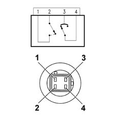

5040BA Check operation of three-stage pressure switch
- Path
- Test > 50 AUXILIARY UNITS > 5040 AIR CONDITIONING CASING AND COMPONENTS > 5040B system safety check devices > 5040BA Check operation of three-stage pressure switch
- Kind
- test / check procedure
- Applies to
- all engines; all production periods
- Interactive page
- https://sloeber94.github.io/elrnDB-fMltpl/en/#/2892400
Applies to: all engines; all production periods
Wiring diagrams and pins

1-2, 2nd stage 3-4, 1st and 3rd stage
Check 1st stage (approx. 2.5 bar):
- Disconnect the pressure switch from its pipe (see PROCEDURES OP.) and check that the circuit between pins 3 and 4 is open.
- Reconnect the pressure switch to its pipe: the contact between pins 3 and 4 closes.
- Reconnect the electrical connection of the pressure switch and switch on the system by pressing the A/C button on the air conditioner control panel.
- Wait a few minutes. At the same time make sure that the compressor switches on normally.
The calibration of the 1st stage is:
- contact opens 2.2 - 2.7 bar
- contact closes 2.3 - 2.9 bar
Check 2nd stage (approx. 15 bar):
- Operate the system with the car stopped.
- Wait a few minutes: the contact between pins 1 and 2 closes. At the same time make sure that the fan comes on.
The calibration of the 2nd level is:
- contact closes 14.2 - 16.2 bar;
- contact opens 10.3 - 12.3 bar.
Check 3rd stage (approx. 28 bar):
- It is advisable not to allow the pressure of the circuit to increase to that value, which is too close to the safety limits.
However, if the system reached this value, the contact between pins 3 and 4 would open.
The calibration of the 3rd level is:
- contact opens 25 - 30 bar;
- contact closes 19 - 24 bar.